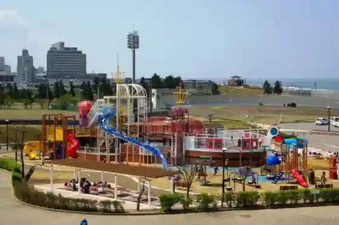
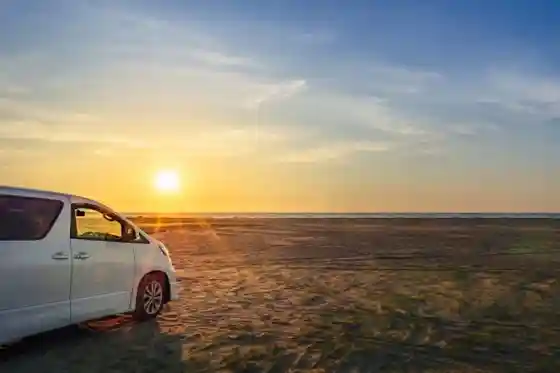
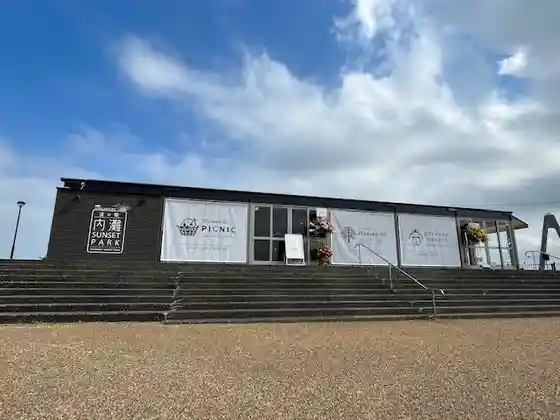

Uchinada Sakyu
Uchinada, Ishikawa · 076-286-6708 · Official / source link
Uchinada General Park
Uchinada, Ishikawa · 076-286-6710 · Official / source link

Uchinada Beach
Uchinada, Ishikawa · 076-286-6708 · Official / source link

Kahoku Kata Hori Ranch / Yume Miruku Kan
Uchinada, Ishikawa · 076-255-1369 · Official / source link
Roadside Station Uchinada Sansetto Park
Uchinada, Ishikawa · 076-255-0007 · Official / source link

Uchinada Bridge / Sansettoburijji Uchinada
Uchinada, Ishikawa · 076-286-6710 · Official / source link
Uchinada Saikuringutaminaru
Uchinada, Ishikawa · 076-286-3766 · Official / source link
Gongen Mori Beach
Uchinada, Ishikawa · 076-286-6708 · Official / source link
Chakudan Chi Kansokujo Ato (Gongen Mori)
Uchinada, Ishikawa · 076-286-6716 · Official / source link
Koibito no Seichi Obujie & Shiawase He no Kane
Uchinada, Ishikawa · 076-286-6708 · Official / source link
Beigun Shisha Ba Shageki Shiki Tokoro Ato
Uchinada, Ishikawa · 076-286-6716 · Official / source link
Chakudan Chi Kansokujo Ato (Nishi Abaraya)
Uchinada, Ishikawa · 076-286-6716 · Official / source link
Uchinada Folk History Museum (Kaze to Suna no Kan)
Uchinada, Ishikawa · 076-286-1189 · Official / source link
Roadside Station Uchinada Minikuru /UCHINADA CRUISING
Uchinada, Ishikawa · 076-286-6708 · Official / source link
Obama Shrine
Uchinada, Ishikawa · 076-286-0012 · Official / source link
Uchinada Sogo Guraundo
Uchinada, Ishikawa · 076-286-1231 · Official / source link
Zeniya Gohe Kuhi
Uchinada, Ishikawa · 076-286-6716 · Official / source link
Inoe Yasufumi Gaku Hi
Uchinada, Ishikawa · 076-286-6716 · Official / source link
Hirasawa Yoshitaro no Hi
Uchinada, Ishikawa · 076-286-6716 · Official / source link
Obama Jinja Sha Shi
Uchinada, Ishikawa · 076-286-6716 · Official / source link
Takahama Kyoshi Kuhi (Uchinada)
Uchinada, Ishikawa · 076-286-6716 · Official / source link
Uchinada Town Hall
Uchinada, Ishikawa · 076-286-1111 · Official / source link